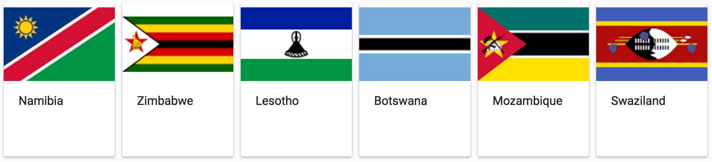
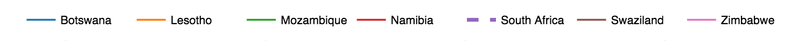
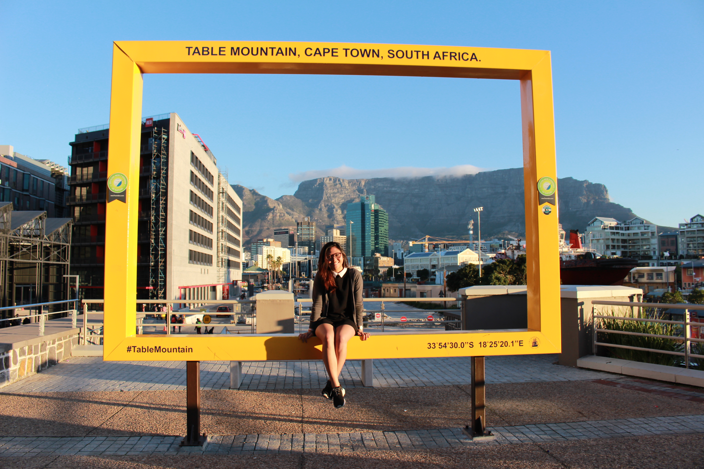

A statistical attempt to explore the nation's journey after the life of Nelson Mandela.
As one of the most prominent leaders in history, Mandela started an anti-apartheid revolution and had since left a huge impact in the lives of South Africans and million others around the world.
Here is a look to the life of Madiba, a Xhosa name he's often referred to, which in English means "the Father of the Nation."
While this page focuses on Mandela's story, the next few tabs will provide you with a closer look to the historical data of South Africa through interactive visualizations, covering population, demographics, conflict regions, and the socio-economic aspect of the country.
This platform was created to let you explore how South Africa today, from many aspects, is a reflection of a lifetime legacy.
More than the fight for freedom of the blacks, Mandela fought for racial equality, democracy, and diversity. The population of South Africa today that you see after Mandela's life is a growing reflection of a diverse nation, with over 56.5-million people and a wide variety of cultures, languages, and religious beliefs.
According to Census 2011 data from Statistics South Africa, the country’s population in 2011 was 51,770,560, of which 26,581,769 (51.3%) were female and 25,188,791 (48.7%) were male.
Africans are in the majority at just over 41-million, making up 79.2% of the total population. The coloured population is 4,615,401 (8.9%), while there are 4,586,838 (8.9%) whites. The Indian/Asian population stands at 1,286,930 (2.5%).
In 2011, “other” was included in the Census, and accounts for 280,454 or 0.5% of the total.
The provinces of Gauteng and KwaZulu-Natal are the most populous, accounting for 42% of South Africa’s population: 12.3 million people (23,7%) live in Gauteng, while 10.3 million (19.8%) live in KwaZulu-Natal.
They are followed by the Eastern Cape with 6.56-million (12.7%), the Western Cape with 5.82-million (11.3%), Limpopo with 5.4-million (10.4%), Mpumalanga with 4.04-million (7.8%), North West with 3.51- million (6.8%), and the Free State with 2.75-million (5.3%).
The Northern Cape is the largest province, but it is an arid region with the smallest population – only 1.15-million people, or 2.2% of the total.
Taking the population statistics further, we break down the demographics data to a more granular level using two decades worth of data (source: UNESCO). This allows us to perform exploratory analysis on South Africa's population based on age, sex, location, birth and mortality rates. Hover over the charts below to see values at a particular point in time.
Population Size
...
South Africa's neighboring countries:
 ...
...
...
Apart from the demographic factor, the socioeconomic stability of South Africa can be explored through its gross domestic product (GDP) and poverty rates.
As a primary indicator that can be used to gauge the health of a country's economy, the following charts show how the economy in South Africa tends to perform much better than that of its neighboring countries, including Botswana, Lesotho, Mozambique, Namibia, Swaziland, and Zimbabwe.
Both GDP and GDP per capita represent the dollar values of all goods and services produced over a specific time period; which means that compared to most African countries, South African economy could easily be one of the highest among other developing countries!
Hover over the chart to pinpoint the numerical details on the GDP of South Africa and its neighbors at a particular year.
...
While the GDP is a good indicator of the socioeconomic stability of South Africa, poverty rates as a measure of the purchasing power parity (PPP) could also be used a metric estimate to compare economic productivity and standards of living between countries and across time. The charts below allow you to explore further this factor in regards to the population living under $3.10 and $1.90 (in US dollars).
...
...
Although South Africa resolved major conflicts through its independence in 1994, the peacekeeping mechanism of the country's politics, defence and security remains being put to test several times in recent years.
The map below, taken from 2017 data, allows you to visualize conflict regions that still exist to date.
Scroll down the right side of the map to see different types of fatalities, interactions, and actors of the event over certain locations.
The colors of current dots represent different interaction types, and their sizes proportional to the size of the event's fatality.
Hover over each dot to see complete information on the event. Select a single date or a range of dates in the timeline below the map to specifically see which events happen at a particular time.
...
 Credits to a stranger, for capturing me with South Africa's staple destination, Table Mountain, in the background. August 26, 2017.This project was inspired by my recent two-week South Africa trip, during which I volunteered to teach at Kuyasa Primary School.
More life-altering than I could have ever imagined, the trip allowed me to find meanings in history and learn what makes this country as it is today.
In my tour to Robben Island, I was able to discover a journey of one of the country's most respected heroes, Nelson Mandela. It just piqued my interest to learn more about Mandela's life and its influence on what South Africa looks like today.
This dashboard project therefore explores how South Africa today, from many aspects, is a reflection of his lifetime legacy.
Also a special shoutout to my classmate Will Geary for his work on UN Peacekeeping dashboard that inspired me to create (but most importantly finish) this platform.
All data, codes, and outputs can be found in my Github repository here.
More detailed instructions of obtaining and parsing each dataset can be found in the jupyter notebook in the aforementioned Github repository.
...